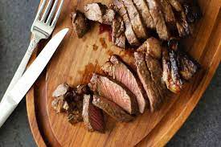

Garlic-Butter Steak

Ingredients
- 2 tablespoons butter, softened, divided
- 1 teaspoon minced fresh parsley
- 1/2 teaspoon minced garlic
- 1/4 teaspoon reduced-sodium soy sauce
- 1 beef flat iron steak or boneless top sirloin steak (3/4 pound)
- 1/8 teaspoon salt
- 1/8 teaspoon pepper
~
Preparation Method
- Mix 1 tablespoon butter with parsley, garlic and soy sauce.
- Sprinkle steak with salt and pepper. In a large skillet, heat remaining butter over medium heat. Add steak; cook until meat reaches desired doneness (for medium-rare, a thermometer should read 135°; medium, 140°; medium-well, 145°), 4-7 minutes per side. Serve with garlic butter.
Some tips!
Why do you put butter on steak?
Butter can make any of your favorite steak recipes more delicious by using it as a basting tool when cooking or to impart flavor once cooked.
How do you season the perfect steak?
The keys to seasoning the perfect steak are as simple as salt and pepper...and lots of it! Let the meat stand for at last an hour (or even overnight in the fridge) to absorb some of the seasoning before cooking. These secret ingredients will take your steak to the next level, too.
How can I make my steak juicy and tender?
o keep your steak juicy and tender, you want an even sear and seal. You can accomplish this by not moving or turning the meat until halfway through cooking time. Also, letting the meat rest after cooking will redistribute the juices throughout, resulting in a nice and juicy steak. Follow these other tips for making any meat as tender as can be.
Back to top
Go back to Odin Recipes